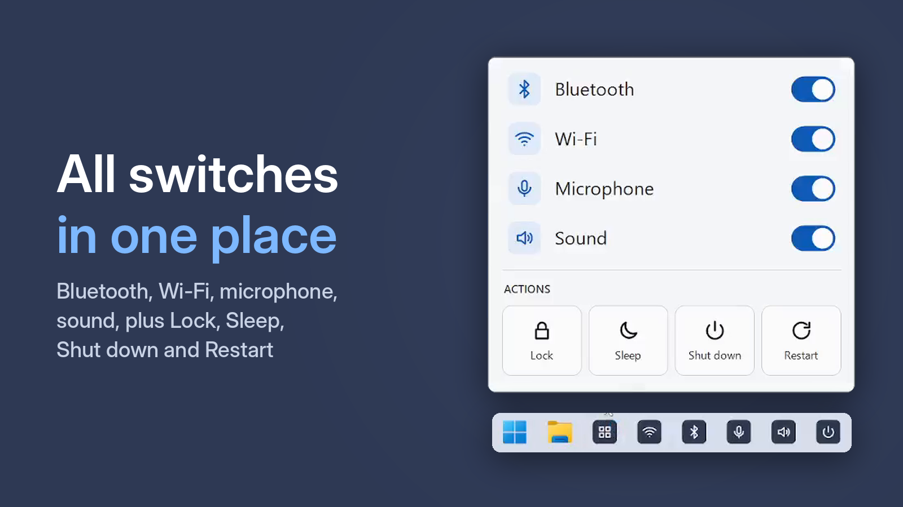

How to Turn Bluetooth On and Off on PC or Laptop — in One Click

You need Bluetooth when you connect headphones, and it gets in the way when those headphones are in the next room trying to connect. Here is how to switch it faster on Windows 10 and 11.
Option 1. Quick Settings
Press Win + A and click the Bluetooth tile. On Windows 11 this opens Quick Settings, on Windows 10 the Action Center. Two clicks — if the tile is there. If not, add it: on Windows 11 with the pencil icon, on Windows 10 in Settings → System → Notifications & actions.
Option 2. Settings
Press Win + I. On Windows 11 go to Bluetooth & devices, on Windows 10 to Devices → Bluetooth & other devices, and use the Bluetooth switch. Reliable, but slow.
Option 3. One taskbar button
One Click Switcher puts a separate Bluetooth button on your taskbar. One click — on, another click — off. A click sound and a "Bluetooth on" pop-up confirm the result, so you don't have to open a menu to check.
Free · Windows 10 and 11 · no ads
If Bluetooth won't turn on
Make sure Airplane mode is off and the adapter is not disabled in Device Manager. If the PC has no Bluetooth adapter at all, One Click Switcher simply tells you the device was not found.